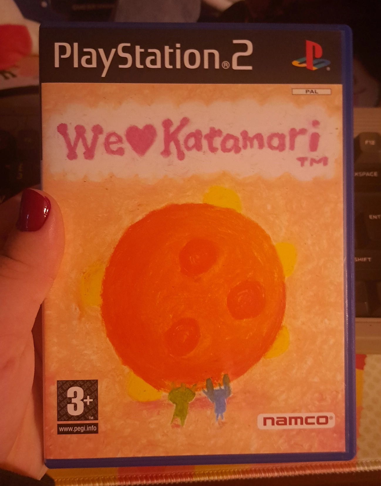
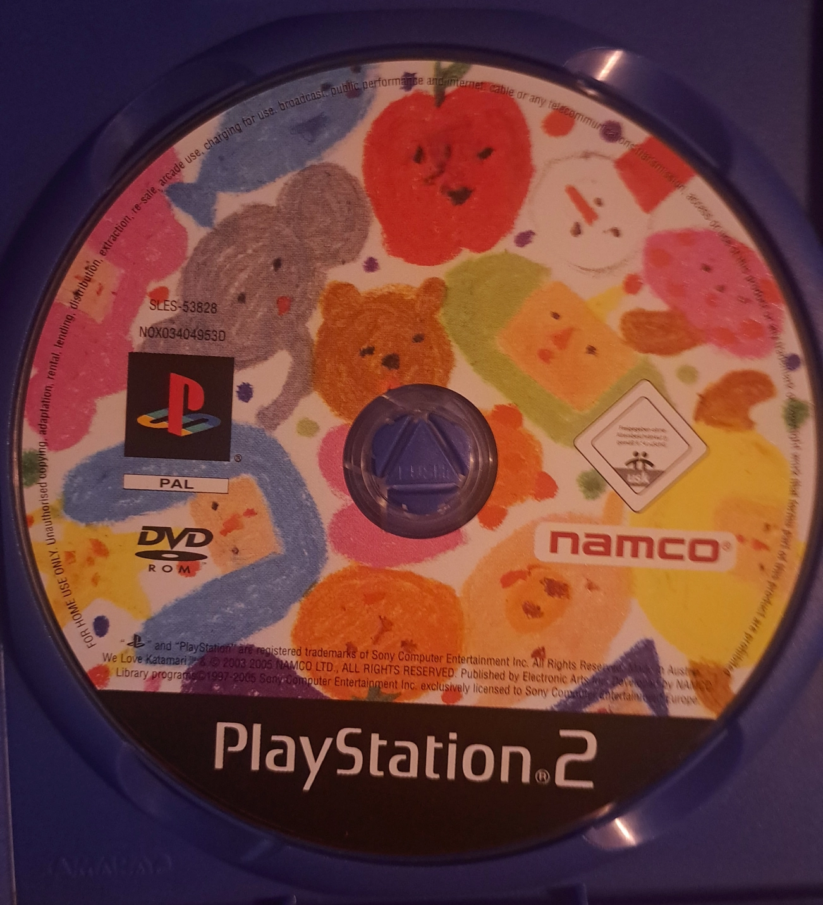

We Love Katamari
Developed and published by: Namco
Directed by: Keita Takahashi
Platforms:
- PS2
- Nintendo Switch, PS4, PS5, XBOX One, XBOX Series, PC (Reroll + Royal Reverie)
Released in:
- 2005
- 2023 (Reroll + Royal Reverie)
Completed? Yes !


European Box Art featuring a crayon-esqe art style !

Game disc featuring the same crayon art style !
We Love Katamari
Developed and published by: Namco
Directed by: Keita Takahashi
Platforms:
Released in:
Completed? Yes !
Soundtrack:
(Because every Katamari game is basically just a Shibuja-kei album that comes with a free game)
1.
Introduction
00:25
2.
Katamari on the Rocks (Arrangement Ver.)
6:47

3.
Overture II
1:17
4.
Katamari on the Swing
4:41
5.
Kuru Kuru Rock
5:11
6.
Everlasting Love
4:46
7.
Bluffing Damacy
5:33
8.
Beuatiful Star
3:09
9.
Angel Rain
7:12
10.
Houston
4:17
11.
Blue Orb
5:01
12.
Katamari Holiday
5:38
13.
Baby Universe
5:07
14.
DISCO★PRINCE
7:02
15.
Sunbaked Savanna
5:33
16.
The Royal Academy of Katamari
3:36
17.
A Song for the King of Kings
4:42
Once upon a time, there was a game called Katamari Damacy. It told the story of a clumsy King, the King Of All Cosmos, who accidentaly destroyed all the stars in the cosmos. Thus, the King sent his son, the Prince, down to earth with a magic ball, the titular Katamari, to roll up a bunch of objects on earth to restore the beautiful stars in the night sky !
This game took the world by storm and seemingly over night the King became a star himself ! The King's fans all over the world had the same thing on the mind however: "We want to roll up more things !". Quite a chorus indeed !
And this was a clear sign for the King to do his thing...
This, my friends, is not an overdramatized story of how We Love Katamari came to be. This is in fact the story of the game itself ! And i love everything about it it's sooo unique !
Super Mario Bros 2 didn't tell the Story of the success of Super Mario Bros 1 and how Miyamoto reskined a game called "Doki Doki Panic" to be Mario themed ! It was about Mario having a nightmare !
We Love Katamari is one of my favorite games of all time ! Period ! This game oozes with creativity from putting the disc into the PS2 all the way to the end credits ! We Love Katamari expands the simple Katamari formula, rolling up objects to grow bigger, in creative ways and tries to awnser the question: "What else can you do with a Katanari?"
While in the first game, your mission in every level was either to grow the Katamari As Large As Possible or to collect as many of a certain object type as possible, here you will find yourself, for example (spoiler warning, perhaps !!), rolling a burning Katamari and trying to keep the flame alive to light a camp fire or rolling up a bunch of fire flies to make the brightest light source possible !
Sure, there still are your regular As Large As Possible stages, but the addition of these new and creative ideas is something that keeps this game fresh and something that makes you want to come back time after time again ! That's something which is sadly missing in the later Katamari games, after Keita Takahashi left the Katamari team.
Also another neat addition in this game are the As Fast As Possible Stages ! Just like the name implies, your goal in these stages is to grow your Katamari to a given size as fast as possible ! These stages are unlocked after completing a regular As Large As Possible mission !
Let's talk about the music of this game ! Because... dude ! DUDE ! The music in the Katamari games is some of the best video game music you will ever hear ! I won't go too much in detail, but rather i'll just leave an iframe with this playlist featuring all the songs from We Love Katamari, so you can see (or rather hear) for your self just how amazing this soundtrack really is !

All in all, We Love Katamari has and will always have a special place in my heart. It has made a big, lasting impact on me, my taste in games and media in general and my appreciation for art and everything that's out of the norm. I wouldn't be the same person i am now if it weren't for this game !
Thank you, We Love Katamari !
I Love You <3